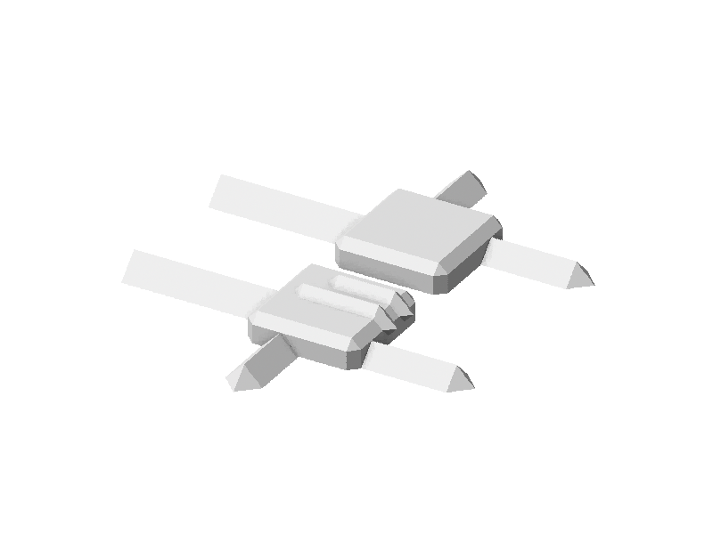
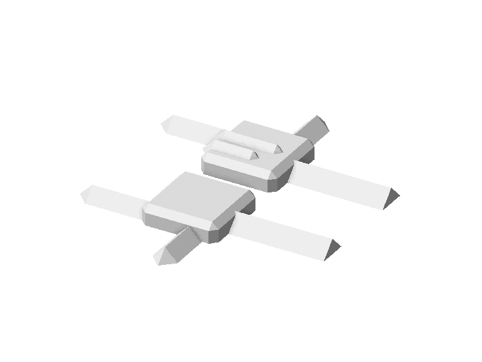

pointer
Drafted with AI, not yet reviewed
by Reiexperimental/pointer.scad
A pointing hand of square prisms and octahedra, split in two halves to print flat side down.
Ported from src/experimental/pointer.scad. Differences: none
in shape. The original’s palm is a minkowski of a box and an octahedron,
here a chamfered cuboid; a finger, a square prism with an octahedron on
each end, is one octahedron elongated.
Compared with the original: within 0.0003 mm.


Files
Source
// SPDX-License-Identifier: 0BSD // // A pointing hand of square prisms and octahedra, split in two halves to // print flat side down. // // Ported from `src/experimental/pointer.scad`. Differences: none // in shape. The original's palm is a minkowski of a box and an octahedron, // here a chamfered cuboid; a finger, a square prism with an octahedron on // each end, is one octahedron elongated. // // Compared with the original: within 0.0003 mm. // --- Parameters --- const PREVIEW = false; // the whole hand, not the halves to print const FINGER_LENGTH = 50.0; const FINGER_R = 10.0; const ARM_R = 12.0; const ARM_LENGTH = 80.0; // --- Hand --- /// A finger `l` long from the origin up Z, its square section's corners on /// the axes, with a pointed end either side. fn finger(l) { octahedron(global::FINGER_R).elongate([0, 0, l]).move([0, 0, l / 2]) } /// The hand, its palm centred on the origin, pointing along +X. fn pointer() { let r = global::FINGER_R; let l = global::FINGER_LENGTH; let arm = cylinder(global::ARM_R, [0, global::ARM_LENGTH], #{sides: 4}) .rotate_y(-90) .move([-r * 5 / 2, 0, 0]); let palm = cuboid([r * 6, r * 3, r * 6], #{chamfer: 5}); let thumb = finger(l * 2 / 3).move([-r, 0, r * 3]); let index = finger(l).rotate_y(90).move([r * 5 / 2, 0, r * 1.5]); let middle = finger(l * 4 / 5).rotate_y(-90).move([r * 5 / 2, r, 0]); let little = finger(l * 3 / 5).rotate_y(-90).move([r * 5 / 2, r, -r * 1.5]); union([arm, palm, thumb, index, middle, little]) } let hand = pointer(); // The hand cut in two at y = 0, each half turned onto its cut face and // moved 40 out from the middle. let halves = union( hand.move([0, 0, 40]).rotate_x(90), hand.move([0, 0, 40]).rotate_x(-90), ).half("z+"); draw(if PREVIEW { hand } else { halves });